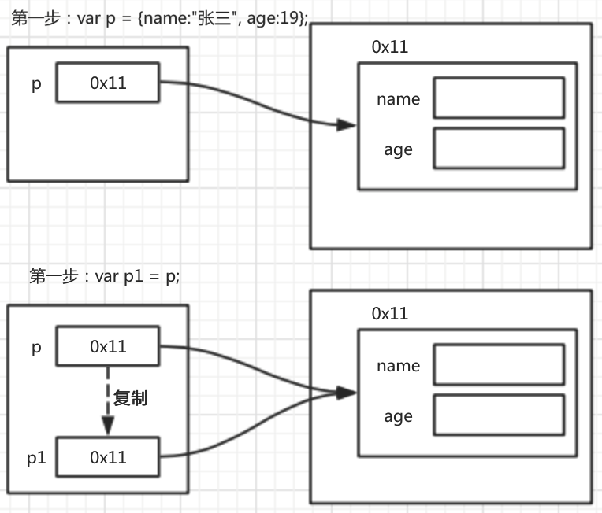

值类型和引用类型的特征
1. 值类型和引用类型的赋值
1.1. 值类型赋值，直接将值复制一份
var num1 = 10;
var num2 = num1;
上面两句代码，在内存中的体现为：

var num1 = 10;表示变量num1存储的是数字10- 将数据拷贝一份，也就是将
10拷贝一份，这个时候内存中有两个10 - 将拷贝的
10赋值给num2
1.2. 引用类型赋值，是将地址复制一份
var p = {name:"张三", age:19};
var p1 = p;
上面两句代码，在内存中的体现为：

var p = {name:"张三", age:19};,p中存储的是对象的地址- 赋值就是将变量
p中存储的数据，也就是地址拷贝一份, 然后将该数据赋值给p1 - 此时内存中只有 1 个对象，变量
p和p1同时指向这个对象
问题: 利用p1修改的name属性会影响到p中的name
2. 值类型和引用类型做参数
考虑如下情况：输出结果是多少？
function foo(num){
num++;
}
var a = 1;
foo(a);
console.log(a);
继续考虑如下情况：输出结果是多少？
function foo(o){
o.age++;
}
var p = {name:"张三", age:19};
foo(p);
console.log(p.age);
总结：
在调用函数的时候，传参的过程其实就是用实参给形参赋值的过程
当参数为值类型的时候，函数内和函数外的两个变量完全不同，仅仅只是存的值一样而已，修改时互不影响
当参数为引用类型的时候，函数内和函数外的两个变量不同，但是共同指向同一个对象，在函数内修改对象数据时会影响外部
扩展：
考虑如下情况：输出结果是多少？
function foo(o){
o = {name:"张三", age:18};
}
var p;
foo(p);
console.log(p.age);